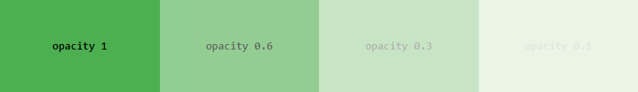

CSS 规则集 (rule-set) 由选择器和声明块组成：
在此例中，所有 <p> 元素都将居中对齐，并带有红色文本颜色：
p {
color:red;
text-align: center;
}
元素选择器根据元素名称来选择 HTML 元素
实例
本实例将页面上所有 <p> 元素都将居中对齐，并带有红色文本颜色：
p {
text-align: center;
color: red;
}
id 选择器使用 HTML 元素的 id 属性来选择特定元素。
元素的 id 在页面中是唯一的，因此 id 选择器用于选择一个唯一的元素！
要选择具有特定 id 的元素，请写一个井号 (#) ，后跟该元素的 id。
实例
这条 CSS 规则将应用于 id="para1" 的 HTML 元素：
#para1 {
text-align: center;
color: red;
}
类选择器选择特定 class 属性的 HTML 元素。
如需选择拥有特定 class 的元素，请写一个句点 (.) 字符，后面跟类名。
实例
在此例中，所有带有 class="center" 的 HTML 元素将为红色且居中对其：
.center {
text-align: center;
color: red;
}
还可以指定只有特定的 HTML 元素会受类的影响。
实例
在这个例子中，只有具有 class="center" 的 <p> 元素会居中对齐：
p.center {
text-align: center;
color: red;
}
HTML 元素也可以引用多个类。
实例
在这个例子中，<p> 元素将根据 class="center" 和 class="large" 进行样式设置：
<p class="center large">这个段落引用两个类。</p>
注意： 类名不能以数字开头！
通用选择器 (*) 选择页面上的所有的 HTML 元素。
实例
下面的 CSS 规则会影响页面上的每个 HTML 元素：
* {
text-align: center;
color: blue;
}
分组选择器选取所有具有相同样式定义的 HTML 元素。
请看下面的 CSS 代码（h1、h2 和 p 元素具有相同的样式定义）：
h1 {
text-align: center;
color: red;
}
h2 {
text-align: center;
color: red;
}
p {
text-align: center;
color: red;
}
最好对选择器进行分组，以最大程度地缩减代码。
如需对选择器进行分组，请用逗号来分隔每个选择器。
实例
在这个例子中，我们对上述代码中的选择器进行分组：
h1, h2, p {
text-align: center;
color: red;
}
| 选择器 | 例子 | 例子描述 |
|---|---|---|
| .class | .intro | 选取所有 class="intro" 的元素。 |
| #id | #firstname | 选取 id="firstname" 的那个元素。 |
| * | * | 选取所有元素。 |
| element | p | 选取所有 <p> 元素。 |
| element,element,.. | div, p | 选取所有 <div> 元素和所有 <p> 元素。 |
有三种插入样式表的方法：
注释用于解释代码，以后在您编辑源代码时可能会有所帮助。
浏览器会忽略注释。
位于 <style> 元素内的 CSS 注释，以 /* 开始，以 */ 结束:
实例
/* 这是一条注释 */
p {
color: red;
}
您可以在代码中的任何位置添加注释：
实例
p {
color: red; /* 把文本设置为红色 */
}
注释能横跨多行：
实例
/* 这是
一条多行的
注释 */
p {
color:red
}
从 HTML 教程中，您学习到可以使用 <!--...--> 语法在 HTML 源代码中添加注释。
<!-- 这个段落将是黑色的 -->
<p>Hello World!</p>
在 CSS 中，可以使用颜色名称来指定颜色：
您可以为 HTML 元素设置背景色：
实例
<h1 style="background-color:DodgerBlue;">China</h1>
<p style="background-color:Tomato;">China is a great country!</p>
您可以设置文本的颜色：
实例
<h1 style="color:Tomato;">China</h1>
<p style="color:DodgerBlue;">China is a great country!</p>
<p style="color:MediumSeaGreen;">China, officially the People's Republic of China...</p>
您可以设置边框的颜色：
实例
<h1 style="border:2px solid Tomato;">Hello World</h1>
<h1 style="border:2px solid DodgerBlue;">Hello World</h1>
<h1 style="border:2px solid Violet;">Hello World</h1>
在 CSS 中，还可以使用 RGB 值、HEX 值、HSL 值、RGBA 值或者 HSLA 值来指定颜色：
与颜色名 "Tomato" 等效，但是透明度为 50%：
background-color 属性指定元素的背景色。
实例
页面的背景色设置如下：
body {
background-color: lightblue;
}
通过 CSS，颜色通常由以下方式指定：
您可以为任何 HTML 元素设置背景颜色：
实例
在这里，<h1>、<p> 和 <div> 元素将拥有不同的背景色：
h1 {
background-color: green;
}
div {
background-color: lightblue;
}
p {
background-color: yellow;
}
opacity 属性指定元素的不透明度/透明度。取值范围为 0.0 - 1.0。值越低，越透明：
实例
div {
background-color: green;
opacity: 0.3;
}
注意： 使用 opacity 属性为元素的背景添加透明度时，其所有子元素都继承相同的透明度。这可能会使完全透明的元素内的文本难以阅读。
如果您不希望对子元素应用不透明度，例如上面的例子，请使用 RGBA 颜色值。下面的例子设置背景色而不是文本的不透明度：
实例
div {
background: rgba(0, 128, 0, 0.3) /* 30% 不透明度的绿色背景 */
}
background-images 属性指定用作元素背景的图像。
默认情况下，图像会重复，以覆盖整个元素。
实例
页面的背景图像可以像这样设置：
body {
background-color: url("paper.gif");
}
注意： 使用背景图像时，请使用不会干扰文本的图像。
还可以为特定元素设置背景图像，例如 <p> 元素：
实例
p {
background-image: url("paper.gif");
}
默认情况下， background-image 属性在水平和垂直方向上都重复图像。
如果上面的图像仅在水平方向重复 ( background-repeat: repeat-x; )，则背景看起来会更好：
实例
body {
background-image: url("gradient_bg.png");
background-repeat: repeat-x;
}
提示： 如需垂直重复图像，请设置 background-repeat: repeat-y;
CSS border 属性允许您指定元素边框的样式、宽度和颜色。
border-style 属性指定要显示的边框类型。
允许以下值：
border-style 属性可以设置一到四个值（用于上边框、右边框、下边框和左边框）。
实例
不同边框
p.dotted {border-style: dotted;}
p.dashed {border-style: dashed;}
p.solid {border-style: solid;}
p.double {border-style: double;}
p.groove {border-style: groove;}
p.ridge {border-style: ridge;}
p.inset {border-style: inset;}
p.outset {border-style: outset;}
p.none {border-style: none;}
p.hidden {border-style: hidden;}
p.mix {border-style: dotted dashed solid double;}
border-width 属性指定四个边框的宽度。
可以将宽度设置为特定大小（以 px、pt、cm、em 计），也可以使用以下三个预定义值之一：thin、medium 或 thick：
实例
不同的边框宽度：
p.one {
border-style: solid;
border-width: 5px;
}
p.two {
border-style: solid;
border-width: medium;
}
p.three {
border-style: dotted;
border-width: 2px;
}
p.four {
border-style: dotted;
border-width: thick;
}
border-width 属性可以设置一到四个值（用于上边框、右边框、下边框和左边框）：
实例
p.one {
border-style: solid;
border-width: 5px 20px; /* 上边框和下边框为 5px，其他边为 20px */
}
p.two {
border-style: solid;
border-width: 20px 5px; /* 上边框和下边框为 20px，其他边为 5px */
}
p.three {
border-style: solid;
border-width: 25px 10px 4px 35px; /* 上边框 25px，右边框 10px，下边框 4px，左边框 35px */
}
border-color 属性用于设置四个边框的颜色。
实例
演示不同的边框颜色：
p.one {
border-style: solid;
border-color: red;
}
p.two {
border-style: solid;
border-color: green;
}
p.three {
border-style: dotted;
border-color: blue;
}
border-color 属性可以设置一到四个值（用于上边框、右边框、下边框和左边框）。
实例
p.one {
border-style: solid;
border-color: red green blue yellow; /* 上红、右绿、下蓝、左黄 */
}
实例
p {
border-top-style: dotted;
border-right-style: solid;
border-bottom-style: dotted;
border-left-style: solid;
}
上例的结果与此相同：
实例
p {
border-style: dotted solid;
}
border 属性是以下各个边框属性的简写属性：
实例
p {
border: 5px solid red;
}
左边框
p {
border-left: 6px solid red;
background-color: lightgrey;
}
结果：
左边框
下边框
p {
border-bottom: 6px solid red;
background-color: lightgrey;
}
结果：
下边框
border-radius 属性用于向元素添加圆角边框：
普通边框
圆角边框
圆角边框
圆角边框
实例
p {
border: 2px solid red;
border-radius: 5px;
}
CSS margin 属性用于在任何定义的边框之外，为元素周围创建空间。
CSS 拥有用于为元素的每一侧指定外边距的属性：
所有外边距属性都可以设置以下值：
提示： 允许负值。
实例
为 <p> 元素的所有四个边设置不同的外边距：
p {
margin-top: 100px;
margin-bottom: 100px;
margin-right: 150px;
margin-left: 80px;
}
为了缩减代码，可以在一个属性中指定所有外边距属性。
margin 属性是以下各外边距属性的简写属性：
实例
margin 简写属性设置四个值：
p {
margin: 25px 50px 75px 100px;
}
如果 margin 属性设置三个值：
实例
使用已设置三个值的 margin 简写属性：
p {
margin: 25px 50px 75px;
}
如果 margin 属性设置了一个值：
实例
使用设置一个值的 margin 简写属性：
p {
margin: 25px;
}
您可以将 margin 属性设置为 auto ，以使元素在其容器中水平居中。
然后，该元素将占据指定的宽度，并且剩余空间将在左右边界之间平均分配。
实例
使用 margin: auto ：
div {
width: 300px;
margin: auto;
border: 1px solid red;
}
本例使 <p class="ex1"> 元素的左外边距继承自父元素（<div>）：
实例
使用 inherit 值：
div {
border: 1px solid red;
margin-left: 100px;
}
p.ex1 {
margin-left: inherit;
}
外边距合并（叠加）是一个相当简单的概念。但是，在实践中对网页进行布局时，它会造成许多混淆。
简单地说，外边距合并指的是，当两个垂直外边距相遇时，它们将形成一个外边距。合并后的外边距的高度等于两个发生合并的外边距的高度中的较大者。
当一个元素出现在另一个元素上面时，第一个元素的下外边距与第二个元素的上外边距会发生合并。请看下图：

当一个元素包含在另一个元素中时（假设没有内边距或边框把外边距分隔开），它们的上和/或下外边距也会发生合并。请看下图：
尽管看上去有些奇怪，但是外边距甚至可以与自身发生合并。
假设有一个空元素，它有外边距，但是没有边框或填充。在这种情况下，上外边距与下外边距就碰到了一起，它们会发生合并：

如果这个外边距遇到另一个元素的外边距，它还会发生合并：

这就是一系列的段落元素占用空间非常小的原因，因为它们的所有外边距都合并到一起，形成了一个小的外边距。
外边距合并初看上去可能有点奇怪，但是实际上，它是有意义的。以由几个段落组成的典型文本页面为例。第一个段落上面的空间等于段落的上外边距。如果没有外边距合并，后续所有段落之间的外边距都将是相邻上外边距和下外边距的和。这意味着段落之间的空间是页面顶部的两倍。如果发生外边距合并，段落之间的上外边距和下外边距就合并在一起，这样各处的距离就一致了。
注释：只有普通文档流中块框的垂直外边距才会发生外边距合并。行内框、浮动框或绝对定位之间的外边距不会合并。
CSS padding 属性用于在任何定义的边界内的元素内容周围生成空间。
通过 CSS，您可以完全控制内边距（填充）。有一些属性可以为元素的每一侧（上、右、下和左侧）设置内边距。
Padding - 单独的边
CSS 拥有用于为元素的每一侧指定内边距的属性：
所有内边距属性都可以设置以下值：
提示： 不允许负值。
实例
为 <div> 元素的所有四个边设置不同的内边距：
div {
padding-top: 50px;
padding-right: 30px;
padding-bottom: 50px;
padding-left: 80px;
}
为了缩减代码，可以在一个属性中指定所有内边距属性。
padding 属性是以下各内边距属性的简写属性：
工作原理是这样的：
如果 padding 属性有四个值：
实例
使用设置了四个值的 padding 简写属性：
div {
padding: 25px 50px 75px 100px;
}
如果 padding 属性设置了三个值：
实例
使用设置了三个值的 padding 简写属性：
div {
padding: 25px 50px 75px;
}
如果 padding 属性设置了两个值：
实例
使用设置了两个值的 padding 简写属性：
div {
padding: 25px 50px;
}
如果 padding 属性设置了一个值：
实例
使用设置了一个值的 padding 简写属性：
div {
padding: 25px;
}
CSS width 属性指定元素内容区域的宽度。内容区域是元素（盒模型）的内边距、边框和外边距内的部分。
因此，如果元素拥有指定的宽度，则添加到该元素的内边距会添加到元素的总宽度中。这通常是不希望的结果。
实例
在这里，<div> 元素的宽度为 300px。但是，<div> 元素的实际宽度将是 350px（300px + 左内边距 25px + 右内边距 25px）：
div {
width: 300px;
padding: 25px;
}
若要将宽度保持为 300px，无论填充量如何，那么您可以使用 box-sizing 属性。这将导致元素保持其宽度。如果增加内边距，则可用的内容空间会减少。
实例
使用 box-sizing 属性将宽度保持为 300px，无论填充量如何：
div {
width: 300px;
padding: 25px;
box-sizing: border-box;
}
height 和 width 属性用于设置元素的高度和宽度。
height 和 width 属性不包括内边距、边框或外边距。它设置的是元素内边距、边框以及外边距内的区域的高度或宽度。
height 和 width 属性可设置如下值：
实例
设置 <div> 元素的高度和宽度：
div {
height: 200px;
width: 50%;
background-color: powderblue;
}
实例
设置另一个 <div> 元素的高度和宽度：
div {
height: 100px;
width: 500px;
background-color: powderblue;
}
注意：请记住， height 和 width 属性不包括内边距、边框或外边距！它们设置的是元素的内边距、边框和外边距的区域的高度/宽度！
max-width 属性用于设置元素的最大宽度。
可以用长度值（例如 px、cm 等）或包含块的百分比（％）来指定 max-width（最大宽度），也可以将其设置为 none（默认值。意味着没有最大宽度）。
当浏览器窗口小于元素的宽度（500px）时，会发生之前那个 <div> 的问题。然后，浏览器会将水平滚动条添加到页面。
在这种情况下，使用 max-width 能够改善浏览器对小窗口的处理。
提示：将浏览器窗口拖动到小于500px的宽度，以查看两个 div 之间的区别！
注释：max-width 属性的值将覆盖 width（宽度）。
这个 <div> 元素的高度为 100 像素，最大宽度为 500 像素：
div {
max-width: 500px;
height: 100px;
background-color: powderblue;
}
对不同部分的说明：
内边距、边框和外边距都是可选的，默认值是零。但是，许多元素将由用户代理样式表设置外边距和内边距。可以通过将元素的 margin 和 padding 设置为零来覆盖这些浏览器样式。这可以分别进行，也可以使用通用选择器对所有元素进行设置：
* {
margin: 0;
padding: 0;
}
在 CSS 中，width 和 height 指的是内容区域的宽度和高度。增加内边距、边框和外边距不会影响内容区域的尺寸，但是会增加元素框的总尺寸。
实例
演示框模型：
div {
width: 300px;
border: 15px solid green;
padding: 50px;
margin: 20px;
}
为了在所有浏览器中正确设置元素的宽度和高度，您需要了解框模型如何工作。
重要提示：使用 CSS 设置元素的 width 和 height 属性时，只需设置内容区域的宽度和高度。要计算元素的完整大小，还必须把内边距、边框和外边距加起来。
实例
<div> 元素的总宽度将是 350px：
div {
width: 320px;
padding: 10px;
border: 5px solid gray;
margin: 0;
}
计算如下：
320px(宽度)
+ 20px（左+右内边距）
+ 10px（左+右边框）
+ 0px（左+右外边距）
= 350px
轮廓是在元素周围绘制的一条线，在边框之外，以凸显元素。
CSS 拥有如下轮廓属性：
注意：轮廓与边框不同！不同之处在于：轮廓是在元素边框之外绘制的，并且可能与其他内容重叠。同样，轮廓也不是元素尺寸的一部分；元素的总宽度和高度不受轮廓线宽度的影响。
outline-style 属性指定轮廓的样式，并可设置如下值：
下例展示了不同的 outline-style 值：
实例
演示不同的轮廓样式：
p.dotted {outline-style: dotted;}
p.dashed {outline-style: dashed;}
p.solid {outline-style: solid;}
p.double {outline-style: double;}
p.groove {outline-style: groove;}
p.ridge {outline-style: ridge;}
p.inset {outline-style: inset;}
p.outset {outline-style: outset;}
结果：
点状轮廓。
虚线轮廓。
实线轮廓。
双线轮廓。
3D 凹槽轮廓。此效果取决于 outline-color 值。
3D 凸槽轮廓。此效果取决于 outline-color 值。
3D 凹边轮廓。此效果取决于 outline-color 值。
3D 凸边轮廓。此效果取决于 outline-color 值。
注意：除非设置了 outline-style 属性，否则其他轮廓属性（在下一章中将详细介绍）都不会有任何作用！
CSS 轮廓宽度
outline-width 属性指定轮廓的宽度，并可设置如下值之一：
下例展示了一些不同宽度的轮廓：
细的轮廓。
中等的轮廓。
粗的轮廓。
4 像素的粗轮廓。
实例
p.ex1 {
border: 1px solid black;
outline-style: solid;
outline-color: red;
outline-width: thin;
}
p.ex2 {
border: 1px solid black;
outline-style: solid;
outline-color: red;
outline-width: medium;
}
p.ex3 {
border: 1px solid black;
outline-style: solid;
outline-color: red;
outline-width: thick;
}
p.ex4 {
border: 1px solid black;
outline-style: solid;
outline-color: red;
outline-width: 4px;
}
outline-color 属性用于设置轮廓的颜色。
可以通过以下方式设置颜色：
invert - 执行颜色反转（确保轮廓可见，无论是什么颜色背景）
红色的实线轮廓。
蓝色的点状轮廓。
灰色的凸边轮廓。
实例
p.ex1 {
border: 2px solid black;
outline-style: solid;
outline-color: red;
}
p.ex2 {
border: 2px solid black;
outline-style: dotted;
outline-color: blue;
}
p.ex3 {
border: 2px solid black;
outline-style: outset;
outline-color: grey;
}
您也可以使用十六进制值（HEX）指定轮廓颜色：
实例
p.ex1 {
outline-style: solid;
outline-color: #ff0000; /* 红色 */
}
下例使用 outline-color: invert，执行了颜色反转。这样可以确保无论颜色背景如何，轮廓都是可见的：
反转颜色的实线轮廓。
实例
p.ex1 {
border: 1px solid yellow;
outline-style: solid;
outline-color: invert;
}
outline 属性是用于设置以下各个轮廓属性的简写属性：
从上面的列表中，outline 属性可指定一个、两个或三个值。值的顺序无关紧要。
下例展示了用简写的 outline 属性指定的一些轮廓：
虚线轮廓。
红色的虚线轮廓。
5 像素的黄色实线轮廓。
粗的粉色凸槽轮廓。
实例
p.ex1 {outline: dashed;}
p.ex2 {outline: dotted red;}
p.ex3 {outline: 5px solid yellow;}
p.ex4 {outline: thick ridge pink;}
outline-offset 属性在元素的轮廓与边框之间添加空间。元素及其轮廓之间的空间是透明的。
下例指定边框边缘外 25px 的轮廓：
此段落的边框外有 25px 的轮廓。
实例
p {
margin: 50px;
border: 1px solid black;
outline: 1px solid red;
outline-offset: 25px;
}
下例显示元素与其轮廓之间的空间是透明的：
本段在边框边缘外的轮廓为 25px。
实例
p {
margin: 30px;
background: yellow;
border: 1px solid black;
outline: 1px solid red;
outline-offset: 25px;
}
color 属性用于设置文本的颜色。颜色由以下值指定：
实例
body {
color: blue;
}
h1 {
color: green;
}
提示： 对于 W3C compliant CSS：如果您定义了 color 属性，则还必须定义 background-color 属性。
在本例中，我们定义了 background-color 属性和 color 属性：
实例
body {
background-color: lightgrey;
color: blue;
}
h1 {
background-color: black;
color: white;
}
text-align 属性用于设置文本的水平对齐方式。
文本可以左对齐或右对齐，或居中对齐。
下例展示了居中对齐以及左右对齐的文本（如果文本方向是从左到右，则默认为左对齐；如果文本方向是从右到左，则默认是右对齐）：
实例
h1 {
text-align: center;
}
h2 {
text-align: left;
}
h3 {
text-align: right;
}
当 text-align 属性设置为 "justify" 后，将拉伸每一行，以使每一行具有相等的宽度，并且左右边距是直的（就像在杂志和报纸中）
实例
div {
text-align: justify;
}
direction 和 unicode-bidi 属性可用于更改元素的文本方向：
实例
p {
direction: rtl;
unicode-bidi: bidi-override;
}
vertical-align 属性设置元素的垂直对齐方式。
本例演示如何设置文本中图像的垂直对齐方式：
实例
img.top {
vertical-align: top;
}
img.middle {
vertical-align: middle;
}
img.bottom {
vertical-align: bottom;
}
text-decoration 属性用于设置或删除文本装饰。
text-decoration: none; 通常用于从链接上删除下划线：
实例
a {
text-decoration: none;
}
实例
h1 {
text-decoration: overline;
}
h2 {
text-decoration: line-through;
}
h3 {
text-decoration: underline;
}
注释：建议不要在非链接文本加下划线，因为这经常会使读者感到困惑。
text-transform 属性用于指定文本中的大写和小写字母。
它可用于将所有内容转换为大写或小写字母，或将每个单词的首字母大写：
实例
p.uppercase {
text-transform: uppercase;
}
p.lowercase {
text-transform: lowercase;
}
p.capitalize {
text-transform: capitalize;
}
text-indent 属性用于指定文本第一行的缩进：
实例
p {
text-indent: 50px;
}
letter-spacing 属性用于指定文本中字符之间的间距。
下例演示如何增加或减少字符之间的间距：
实例
h1 {
letter-spacing: 3px;
}
h2 {
letter-spacing: -3px;
}
line-height 属性用于指定行之间的间距：
实例
p.small {
line-height: 0.8;
}
p.big {
line-height: 1.8;
}
word-spacing 属性用于指定文本中单词之间的间距。
下例演示如何增加或减少单词之间的间距：
实例
h1 {
word-spacing: 10px;
}
h2 {
word-spacing: -5px;
}
white-space 属性指定元素内部空白的处理方式。
此例演示如何禁用元素内的文本换行：
实例
p {
white-space: nowrap;
}
实例
h1 {
text-shadow: 2px 2px 5px red;
}
为您的网站选择正确的字体很重要！
具体字体样式请看源码。
font-style 属性主要用于指定斜体文本。
此属性可设置三个值：
实例
p.normal {
font-style: normal;
}
p.italic {
font-style: italic;
}
p.oblique {
font-style: oblique;
}
font-weight 属性指定字体的粗细：
实例
p.normal {
font-weight: normal;
}
p.thick {
font-weight: bold;
}
font-variant 属性指定是否以 small-caps 字体（小型大写字母）显示文本。
在 small-caps 字体中，所有小写字母都将转换为大写字母。但是，转换后的大写字母的字体大小小于文本中原始大写字母的字体大小。
实例
p.normal {
font-variant: normal;
}
p.small {
font-variant: small-caps;
}
font-size 属性设置文本的大小。
使用像素设置文本大小可以完全控制文本大小：
实例
h1 {
font-size: 40px;
}
h2 {
font-size: 30px;
}
p {
font-size: 14px;
}
提示：如果您使用了像素，则仍然可以使用缩放工具来调整整个页面的大小。
实例
h1 {
font-size: 2.5em; /* 40px/16=2.5em */
}
h2 {
font-size: 1.875em; /* 30px/16=1.875em */
}
p {
font-size: 0.875em; /* 14px/16=0.875em */
}
可以使用 vw 单位设置文本大小，它的意思是“视口宽度”（"viewport width"）。
这样，文本大小将遵循浏览器窗口的大小，请调整浏览器窗口的大小，以查看字体大小如何缩放：
实例
<h1 style="font-size:10vw">Hello World</h1>
如果您不想使用 HTML 中的任何标准字体，则可以使用 Google Fonts API 向页面添加数百种其他字体。
只需添加一个样式表链接并引用您选择的字体系列：
实例
Sofia Font
为了缩短代码，也可以在一个属性中指定所有单个字体属性。
font 属性是以下属性的简写属性：
实例
使用简写声明设置一些字体属性：
p.a {
font: 20px Arial, sans-serif;
}
p.b {
font: italic small-caps bold 12px/30px Georgia, serif;
}
注意： font-size 和 font-family 的值是必需的。如果缺少其他值之一，则会使用其默认值。
通过 CSS，可以用不同的方式设置链接的样式。
链接可以使用任何 CSS 属性（例如 color、font-family、background 等）来设置样式。
实例
a {
color: hotpink;
}
此外，可以根据链接处于什么状态来设置链接的不同样式。
四种链接状态分别是：
实例
/* 未被访问的链接 */
a:link {
color: red;
}
/* 已被访问的链接 */
a:visited {
color: green;
}
/* 将鼠标悬停在链接上 */
a:hover {
color: hotpink;
}
/* 被选择的链接 */
a:active {
color: blue;
}
如果为多个链接状态设置样式，请遵循如下顺序规则：
text-decoration 属性主要用于从链接中删除下划线：
实例
a:link {
text-decoration: none;
}
a:visited {
text-decoration: none;
}
a:hover {
text-decoration: underline;
}
a:active {
text-decoration: underline;
}
background-color 属性可用于指定链接的背景色：
实例
a:link {
background-color: yellow;
}
a:visited {
background-color: cyan;
}
a:hover {
background-color: lightgreen;
}
a:active {
background-color: hotpink;
}
本例演示了一个更高级的例子，其中我们组合了多个 CSS 属性，将链接显示为框/按钮：
a:link, a:visited {
background-color: #f44336;
color: white;
padding: 14px 25px;
text-align: center;
text-decoration: none;
display: inline-block;
}
a:hover, a:active {
background-color: red;
}
在 HTML 中，列表主要有两种类型：
CSS 列表属性使您可以：